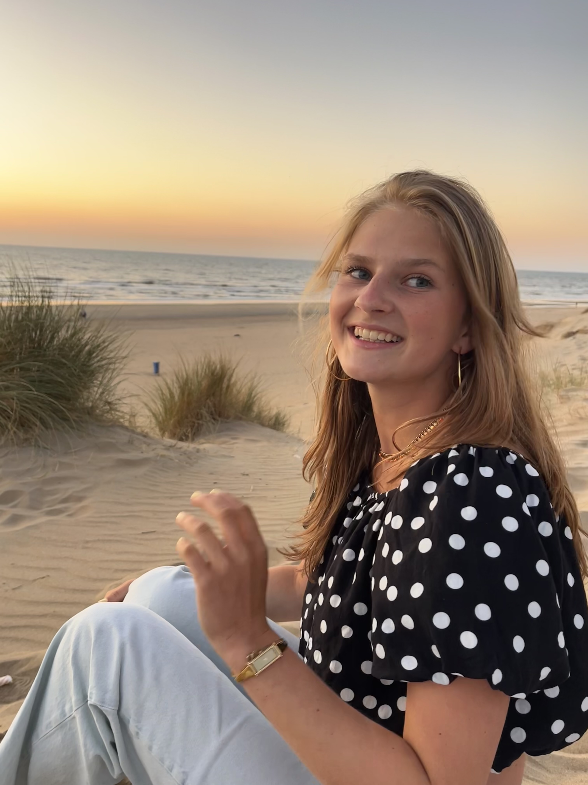
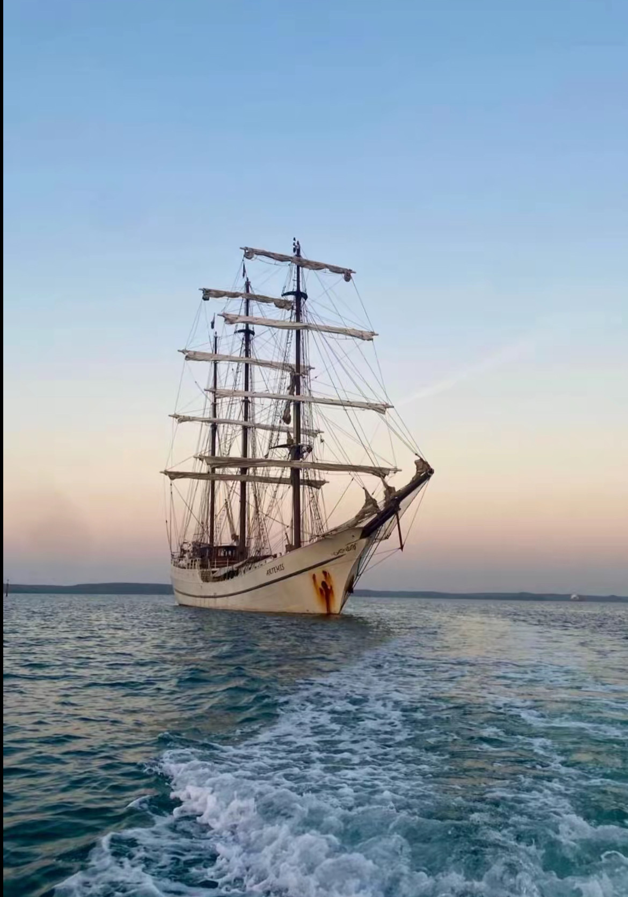
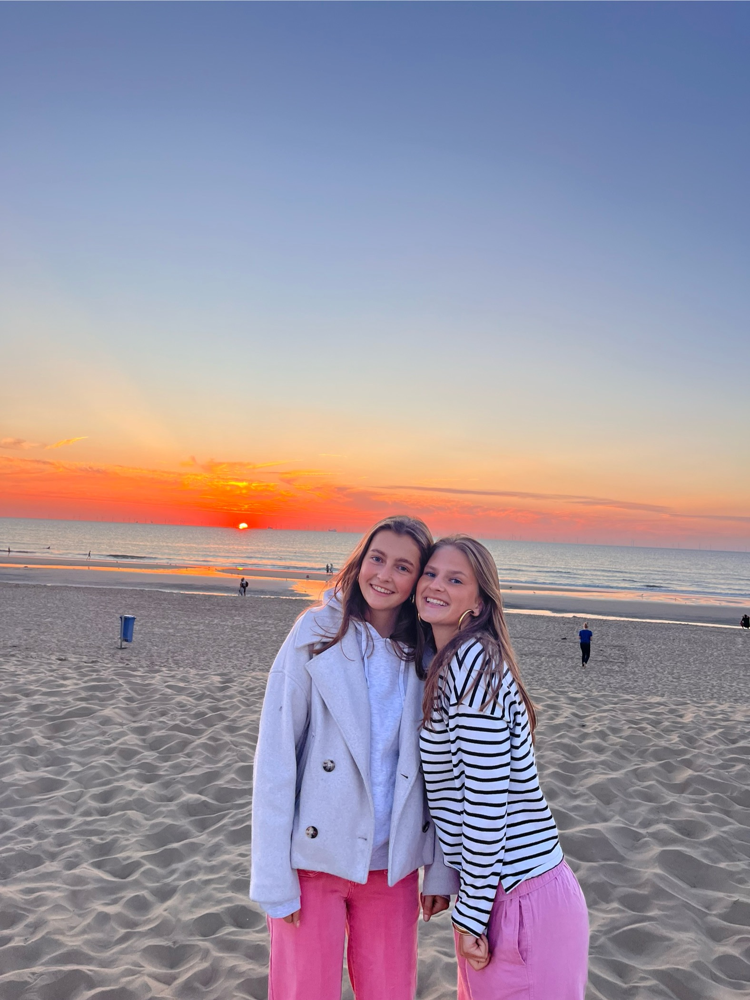

Kate Jansen
Kate Jansen
Mijn naam is Kate Jansen en deze pagina gaat over mijzelf. Ik ben 16 jaar oud en woon in Voorschoten. In mijn vrije tijd heb ik verschillende hobby's die mij dagelijks bezighouden.
Een van mijn grootste hobby's is hockey. Ik train twee keer per week en op zaterdag speel ik altijd een wedstrijd. Dat doe ik met veel plezier en inmiddels al behoorlijk lang. Naast hockey speel ik ook tennis. Hoewel ik daar wat later mee ben begonnen, doe ik het inmiddels al zo'n vijf jaar. Voor tennis train ik één keer per week en op zondag speel ik competitie.
Naast sport besteed ik mijn tijd ook aan andere dingen. Ik zit op school op het Vlietland College in Leiden, waar ik in 5 vwo zit. Buiten school en sport hou ik van shoppen en in het weekend spreek ik graag af met vriendinnen om iets leuks te doen.
Mijn gezin bestaat uit mijn vader, moeder en een broertje. Verder heb ik 5 neefjes en nichtjes waar ik altijd veel contact mee heb en soms ook mee op vakantie ga.
Vorig jaar in oktober heb ik met masterskip de oceaan over gezeild. Dt was het mooiste avontuur wat ik tot nu heb beleefd. Daar op de boot volgde ik gewoon school en ondertussen leerde ik ook zeilen. En het mooiste was dat je ook heel veel nieuwe vrienden maakt die ik nu nogsteeds regelmatig zie. Hieronder zie je een foto van de boot.
Als laatst wil ik nog wat vertellen over mijn beste vriendin Flroine. Ik zat vroeger met haar op turnen, maar toe had ik eigenlijk nog geen idee van haar bestaan. Dat zelfde jaar kwamen we elkaar tegen op vakantie en kwamen we erachter dat we inhetzelfde dorp woonde en bij elkaar op turnen zaten. Een paar jaar later hadden we eigenlijk geen contact meer en nu zitten we bij elkaar op tennis. Hieronder zie je een leuke foto van ons.


